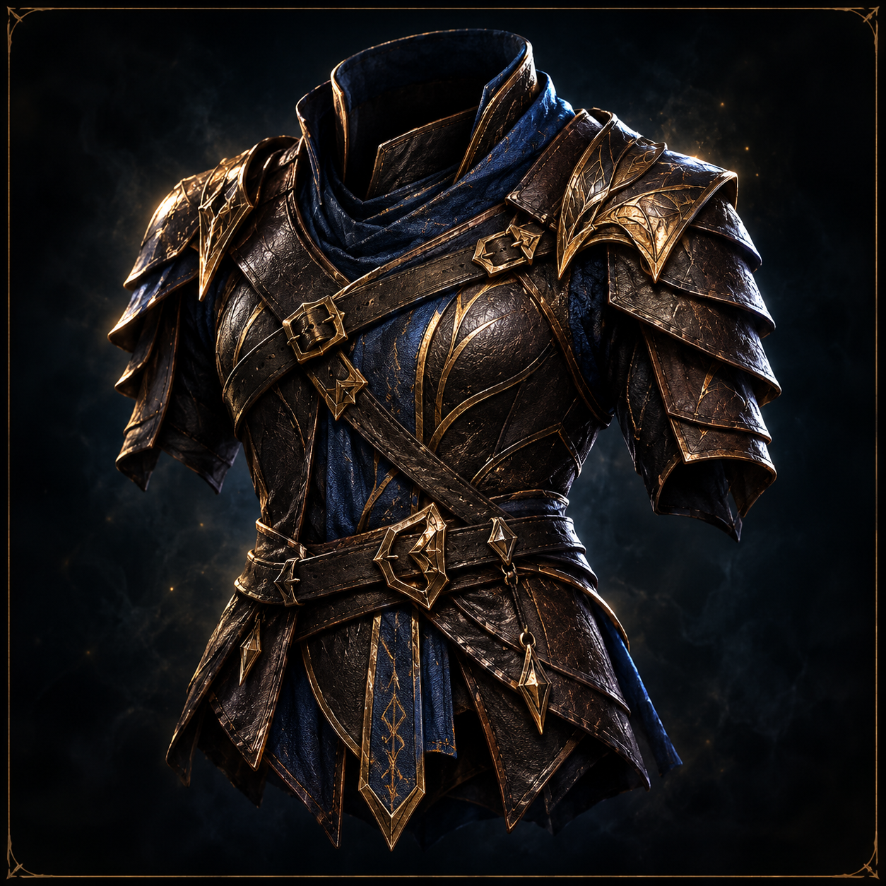
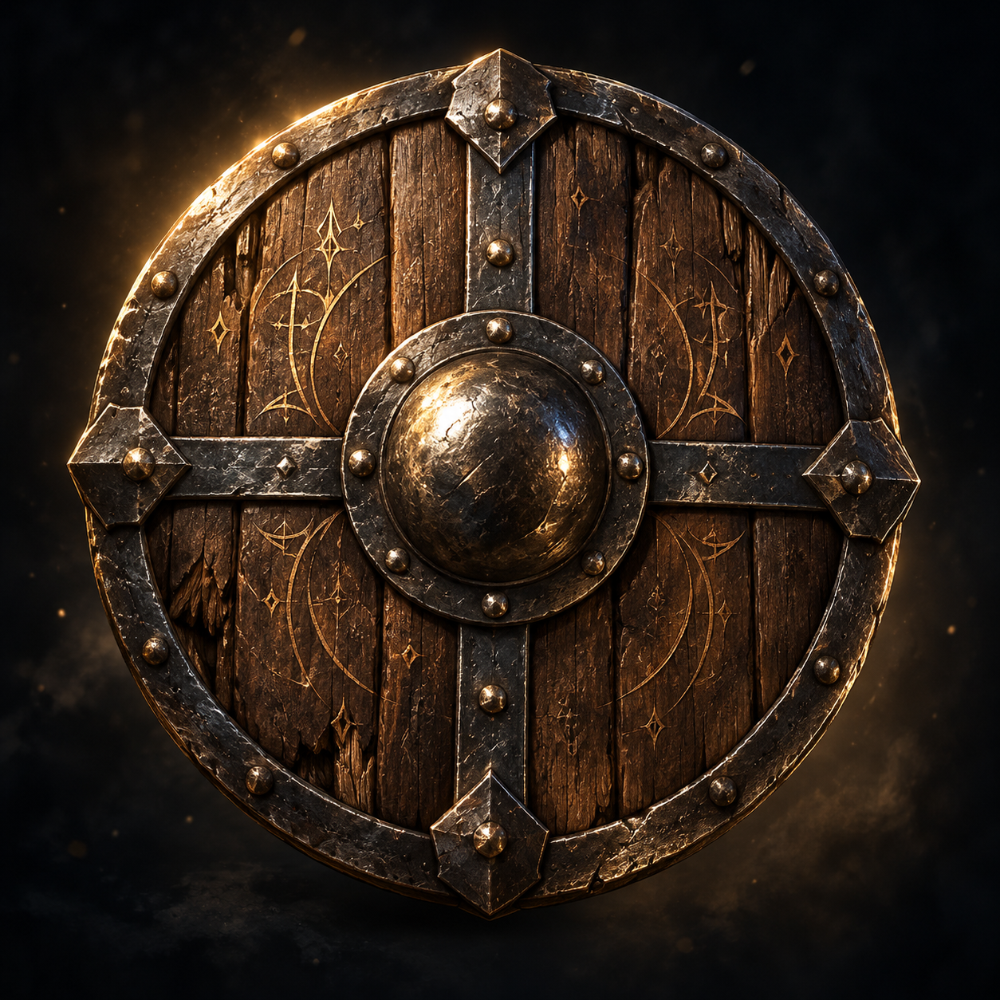
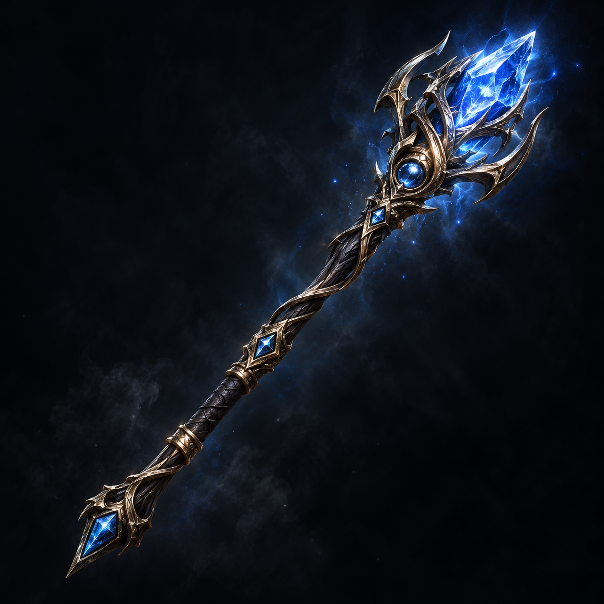
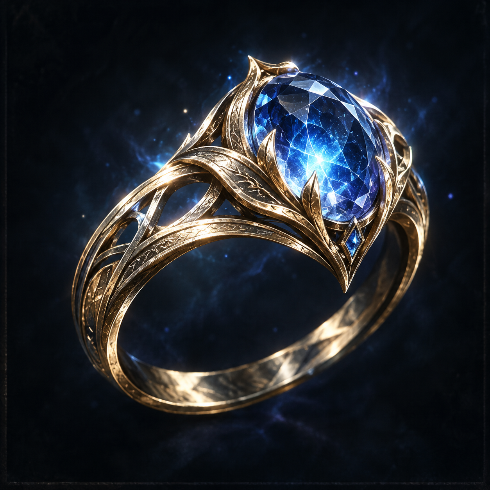
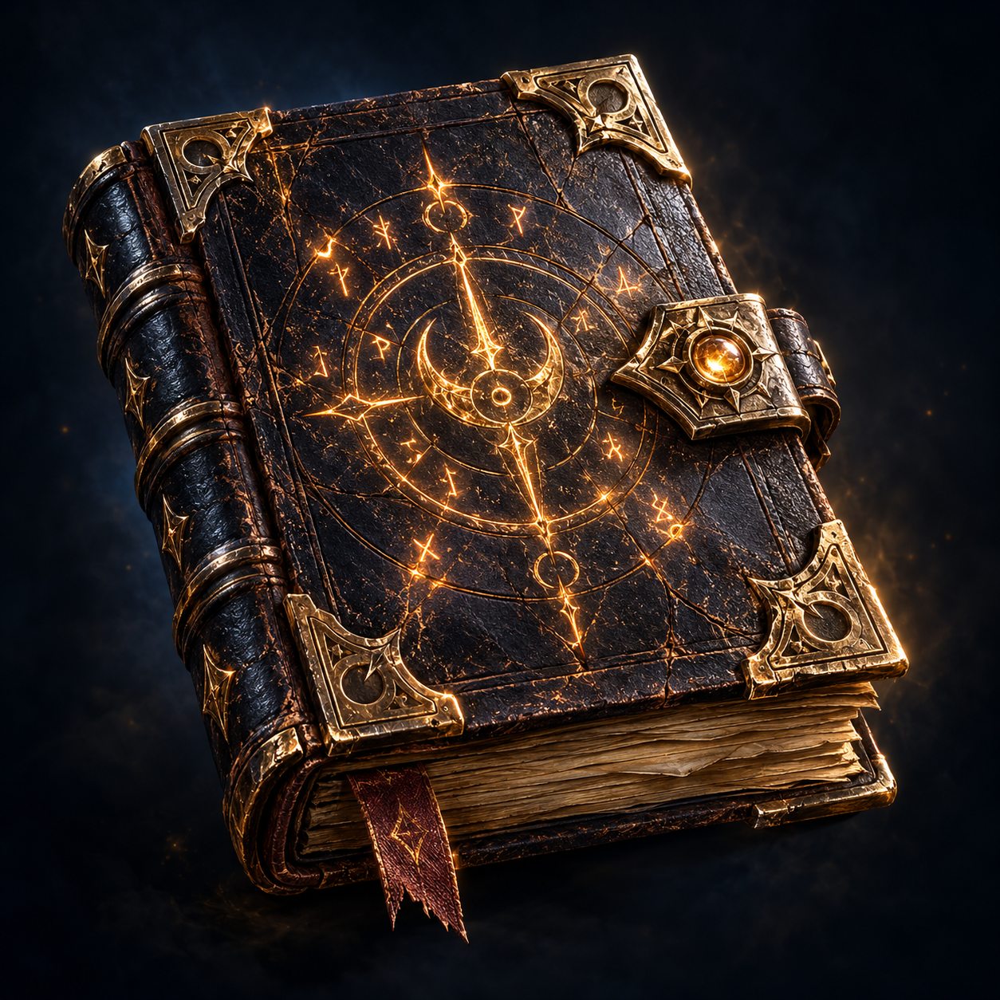
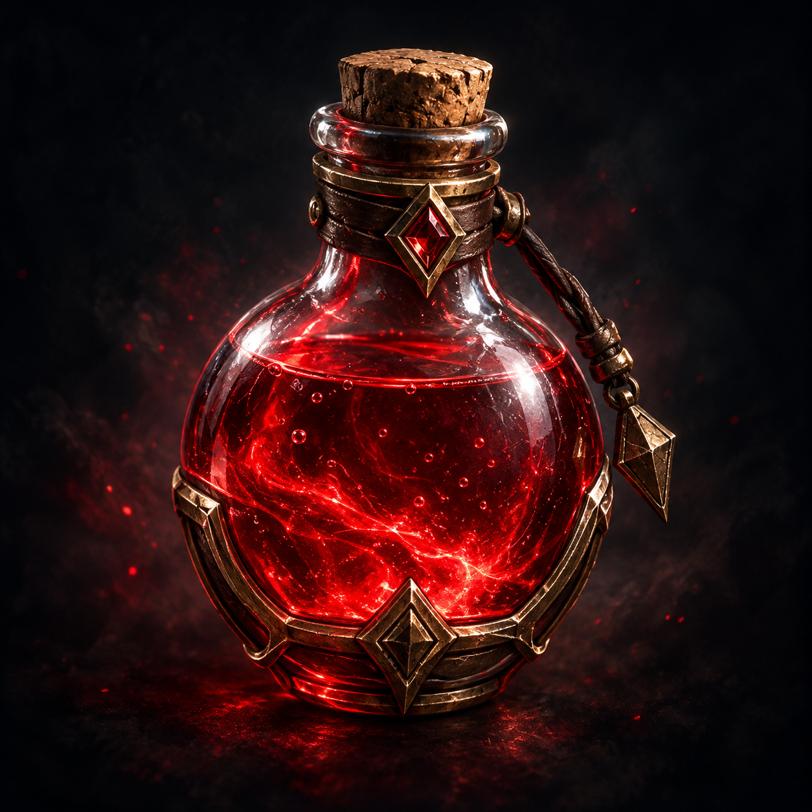

ATRIBUTOS
VALORES CONHECIDOS DE THARIONFORÇA−1Valor 8
DESTREZA+2Valor 14
CONSTITUIÇÃO+1Valor 12
INTELIGÊNCIA+3Valor 16
SABEDORIA+0Valor 10
CARISMA+1Valor 13
ORIGEM E EVOLUÇÃO
REGRAS DE 2024EspécieElfo
ClasseMago
AntecedenteNão cadastrado
Talento de origemNão cadastrado
Características, idiomas e proficiências
Ainda não auditados no modelo de dados. O formulário futuro precisará refletir escolhas e características reais, sem atribuir valores automaticamente.
PERÍCIAS E RESISTÊNCIAS
IMPLEMENTAÇÃO PENDENTEO modelo atual guarda os seis atributos, mas ainda não há estrutura persistente confirmada para proficiências e testes de resistência. Nenhum bônus de perícia será inventado nesta demonstração.
MAGIAS E CARACTERÍSTICAS
IMPLEMENTAÇÃO PENDENTEO grimório, as magias preparadas, os espaços de magia e a recuperação de recursos aparecerão quando os dados e cálculos estiverem implementados conforme D&D 2024.
ARSENAL E EQUIPAMENTOS
ARTES CONCEITUAIS
Armadura ornamentada
Escudo rúnico
Cajado arcano
Anel élfico
Grimório arcano
Poção rubraImagens de referência artística, não equipamentos confirmados no inventário do personagem.